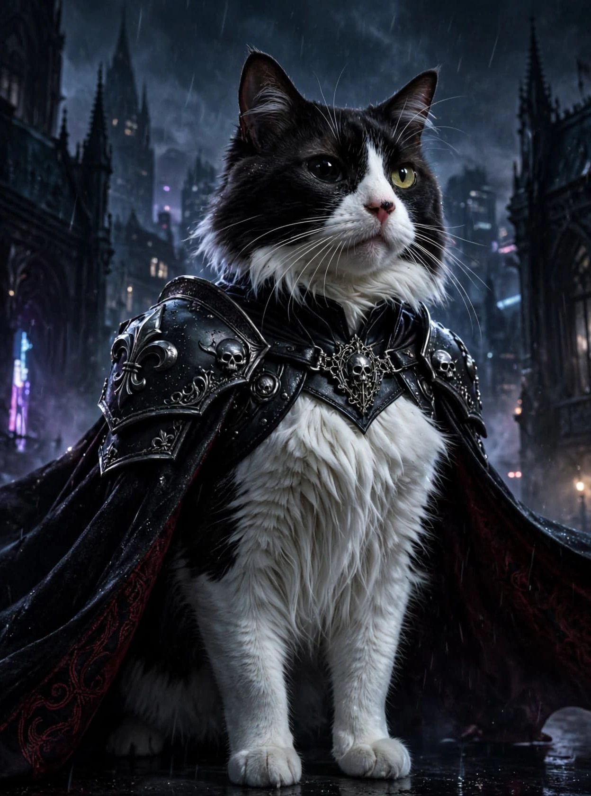
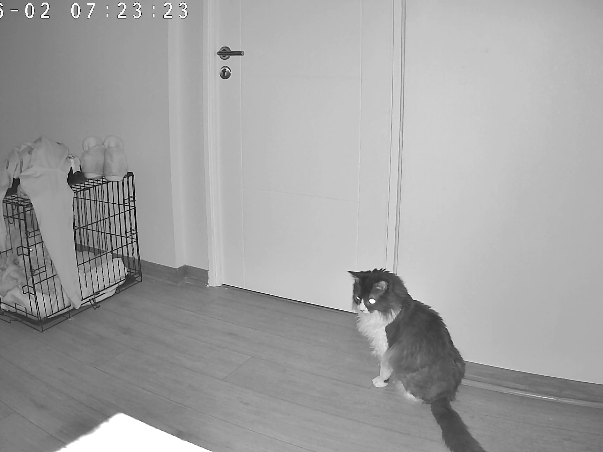
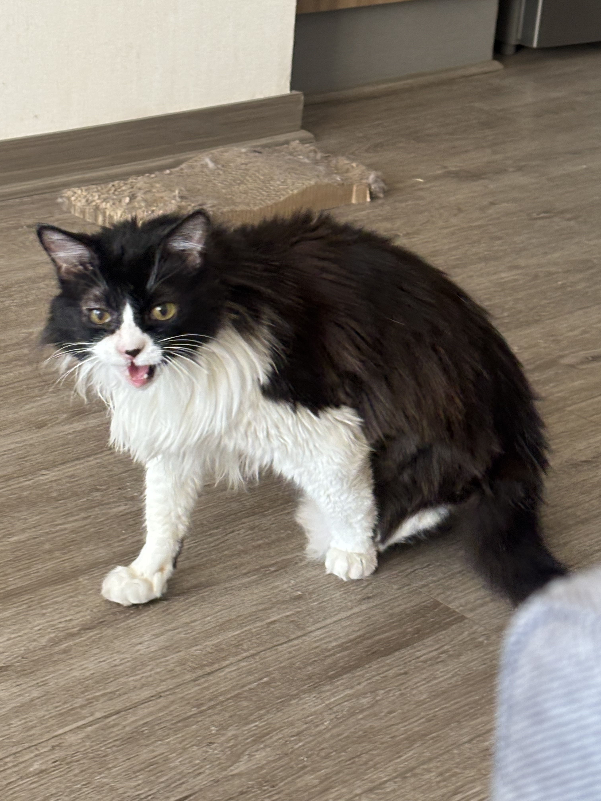

🍦 Vanilla & Strawberry Ice Cream
Pompón has tried to steal a taste of vanilla and strawberry ice cream.
Pompón has many favorite things, from sleeping and eating to traveling, talking, watching the world outside, and enjoying his own little rituals.
His favorites are simple, but they show a lot about his funny, curious, and affectionate personality.

Food is definitely one of Pompón's favorite subjects. He has some very specific preferences!

One of Pompón's funniest traditions happens after he uses his litter box. The moment he leaves the litter area, something changes.
Suddenly, Pompón becomes Lightning McQueen! 🏎️🐾 He runs around the house as if he were competing in a very important race.
It has become a sacred little ritual in the house. Nobody knows exactly why he does it, but everyone knows when the race has started!
Pompón currently lives in Santiago, Chile, and it has become his favorite city.
He also enjoys traveling by bus. His favorite arrangement is having his own seat where he can settle down and, naturally, sleep.
Pompón is not a fan of cold weather, so a warm and comfortable place is always his preferred destination.


Pompón loves sleeping, being covered with a blanket, talking back during conversations, and sharpening his claws. In fact, he sometimes spends more time sharpening his claws than exercising! 😹
His family also has a funny nickname for him: El Colo-Colo, inspired by the Chilean soccer team and its colors.
Pompón has also discovered some human foods that he finds extremely interesting. His curiosity does not mean that these foods are treats for him, though!
Pompón has tried to steal a taste of vanilla and strawberry ice cream.
Cookies are another human snack that has caught Pompón's attention.
He has also shown curiosity about milk and strawberry yogurt.
Pompón's curiosity can extend to unexpected foods, including mushrooms and other things he sees his family eating.
These are foods Pompón has tried to steal, not foods his family gives him. His family keeps human foods away from him because they may not be appropriate for cats.
If you could choose one activity for Pompón to enjoy right now, what would you choose?
Pompón's favorite things are more than food, naps, toys, trips, and funny rituals. They show how a cat can continue enjoying life despite difficult experiences.
He may have three paws, a big personality, and perhaps a little more weight than he needs, but he is still happy, playful, affectionate, and completely himself.
Pompón's story is a reminder that challenges do not have to define a life. Sometimes you just keep going, enjoy the good things, and become a little bit chubby along the way. 🐾💚